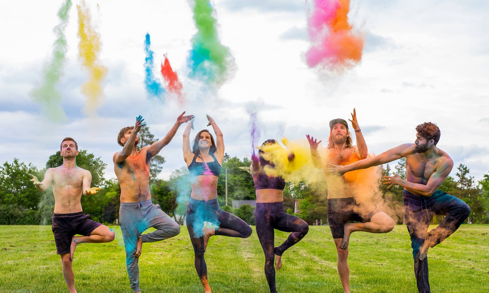

A Michigan native, Kara Baruzzini, is a Lululemon Ambassador, Entrepreneur, and International Yoga Teacher (E-RYT 200). Her yoga journey began in 2011, while traveling in Europe. She accidentally stumbled into a “Laughter” Yoga Class and from that point, she took on a journey of self discovery through 9 months of traveling independently in Europe. Kara found her passion in all things yoga and had an insatiable thirst to learn more that becoming a yoga teacher was truly the next step. Just one year later, she became a Certified Yoga Teacher through LifePower Yoga. She has since taught yoga consistently across Michigan from Ann Arbor to Traverse City, and taught internationally in Spain and Costa Rica.
Kara’s teaching style has firm roots in Ashtanga Yoga. She specializes in Jonny Kest Vinyasa, AcroYoga, Inversion Training; and has experience in Slowburn, SUP Yoga, Beach Yoga, Yin, Partner Yoga, Roots (Healthy Backs), and Yoga For Athletes. Her Vinyasa classes are full of dynamic sequencing and playful transitions.
Kara’s current mission is to continue spreading the yoga love through her classes and by taking yoga off the mat. She continually puts her heart and soul into her work, creating and planning events that will eventually spread this love on a larger scale.
For more information email kara.baruzzini@gmail.com or follow @karaziniyoga on Instagram.
All the way from Australia, Sophie brings a Business degree in Sport, and a Masters in Information to the team. As a professional triathlete and previous division 1 athlete at Michigan, Sophie turned to yoga to reduce running related injuries, and practice mindfullness to help with the stress of performance. Now finishing off her degree, she is now focusing on how to leverage her status as an athlete to positively impact the running and triathlon community in Ann Arbor.
Please fill out the form to contact us below and we will get back to you in a timely manner.
Sign up below to be notified when tickets go on sale!